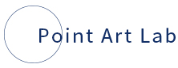
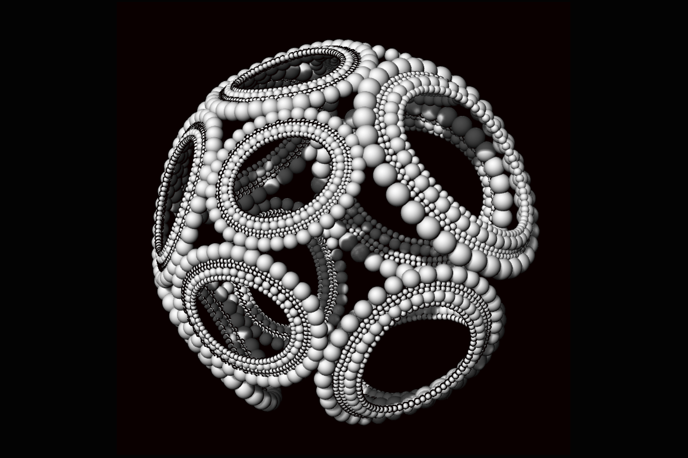
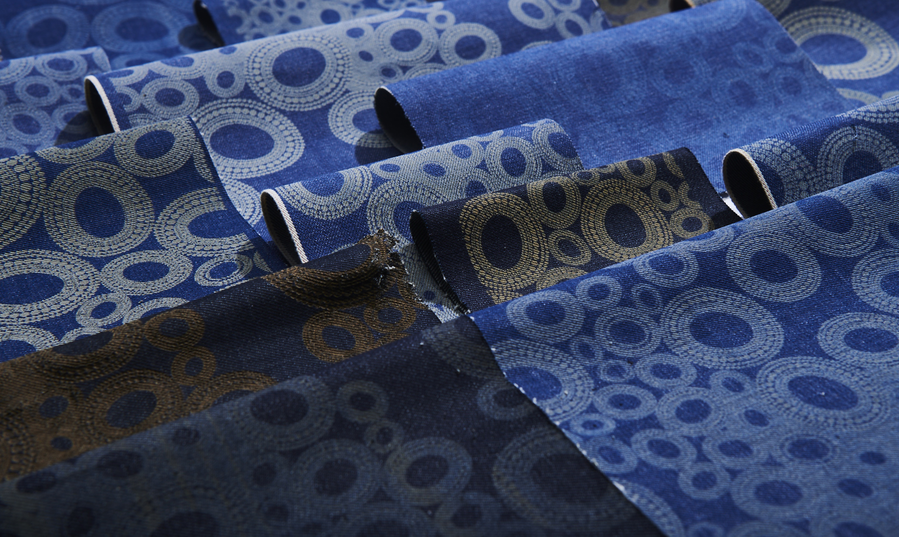
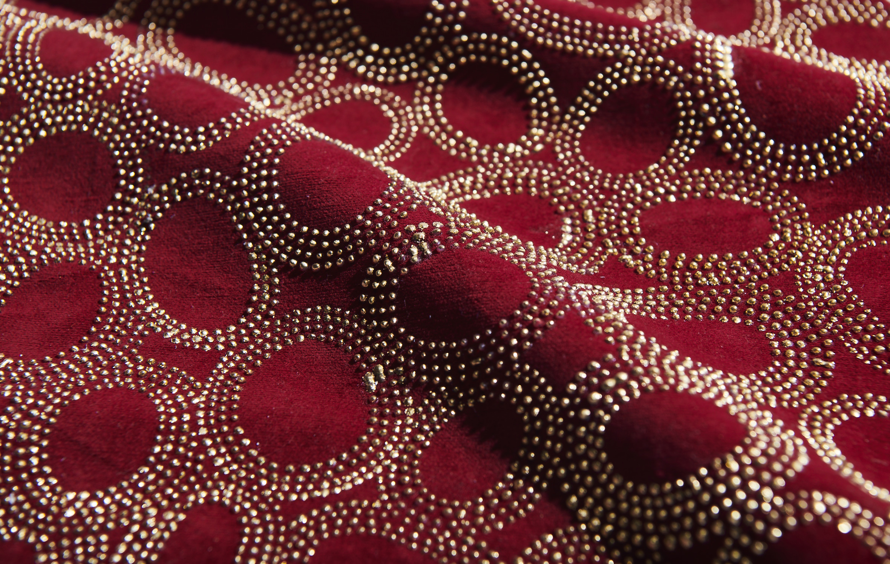

top
material
news
News

new
2020.08.25
- 樹脂 -
3Dソフトを使用し、点描の立体表現した。立体にすることで動きのある表現や平面では気がつかなかったフォルムの特徴を知ることができた。 制作時間は7時間。

2020.08.17
-デニム-
レーザープリンターで繊維を燃やしなが点描模様を表現した。レーザーの出力スピードやパワーによって模様が変化する。

2020.08.14
-箔押し-
箔押し専用のノリを使用し、ベロア生地に丸を1個ずつ描いて立体感を出した。